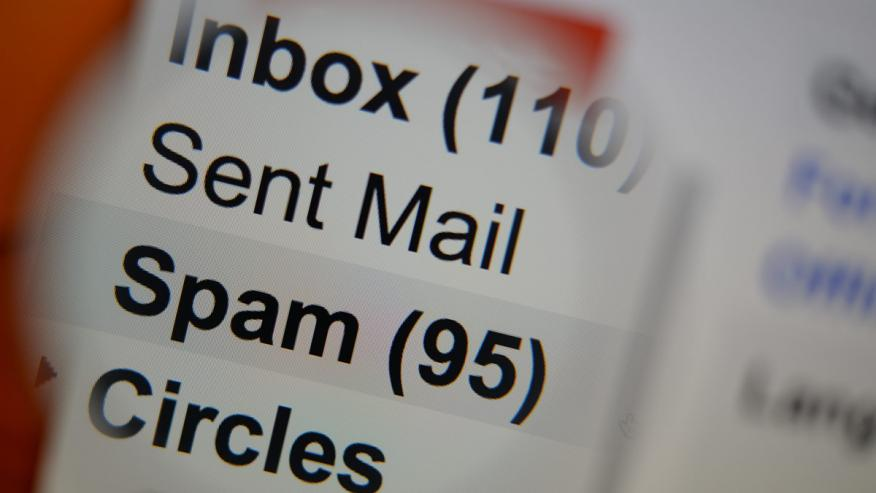

Ciberseguridad
ELENA, nueva plataforma para la investigación sobre ciberamenazas
El Centro Criptológico Nacional, adscrito al Centro Nacional de Inteligencia, ha presentado ELENA, una nueva solución para facilitar la capacitación de los profesionales en ciberseguridad.
La plataforma permite a los usuarios adentrarse en el ámbito de la ciberinvestigación y practicar las técnicas, tácticas y procedimientos necesarios para realizar labores de este tipo en cometidos de prevención y análisis de ciberamenazas.
Los usuarios de ELENA encarnarán el rol del personaje llamado CCN-Warrior, que representa a un ciberinvestigador analizando el comportamiento de ciberamenazas que operan en ámbitos digitales, y tendrán que hacer frente a numerosos casos prácticos que resolver.
La plataforma ofrece diversos escenarios e itinerarios prácticos que simulan situaciones reales de diferente tipo, desde escenarios menos técnicos que requieren un mayor grado de lógica y toma de decisiones hasta simulaciones técnicas.
De este modo, ELENA se presenta como un complemento innovador a la formación teórica del usuario, facilitando el ensayo de los conceptos aprendidos en un entorno de laboratorio desarrollado mediante simulación digital.
Alertan sobre los píxeles espía que revelan si un correo se abre: dos tercios de 'emails' los usan
Los píxeles de seguimiento o píxeles espía en los correos electrónicos permiten saber si el receptor lo ha abierto y desde qué localización y dispositivo, y en la actualidad su uso se ha vuelto "endémico", según ha alertado la herramienta de seguridad para el correo Hey.
Como recoge la cadena británica BBC, dos tercios de los correos electrónicos recibidos por los usuarios de la herramienta de correo Hey contenían píxeles espía, un total de 600.000 mensajes al día del total de un millón de correos diarios analizados.
Los píxeles de seguimiento en los correos electrónicos son una técnica utilizada de forma frecuente, y permiten saber si este se ha abierto, cuándo, cuántas veces, desde qué dispositivo y la localización aproximada del usuario basada en su dirección IP, que incluso precisa la calle.
Suele aparecer como un archivo de imagen en formato GIF o PNG de 1x1 píxeles insertado en el encabezamiento o en el pie del correo, y normalmente no resulta apreciable a simple vista ni hay forma de evitarlo, como informa también la compañía de servicios en la nube CloudHQ.
El cofundador de la herramienta, David Heinemeier Hansson, ha asegurado que el uso de los píxeles de seguimiento se ha convertido en "endémico" en la actualidad y ha denunciado que se utilizan de forma invisible para el usuario.